# Installing packages
if (!requireNamespace("ComplexHeatmap", quietly = TRUE)) {
install.packages("ComplexHeatmap")
}
if (!requireNamespace("dendextend", quietly = TRUE)) {
install.packages("dendextend")
}
if (!requireNamespace("tidyr", quietly = TRUE)) {
install.packages("tidyr")
}
if (!requireNamespace("circlize", quietly = TRUE)) {
install.packages("circlize")
}
if (!requireNamespace("gridExtra", quietly = TRUE)) {
install.packages("gridExtra")
}
if (!requireNamespace("pheatmap", quietly = TRUE)) {
install.packages("pheatmap")
}
# Load packages
library(ComplexHeatmap)
library(dendextend)
library(tidyr)
library(circlize)
library(gridExtra)
library(pheatmap)ComplexHeatmap
Example
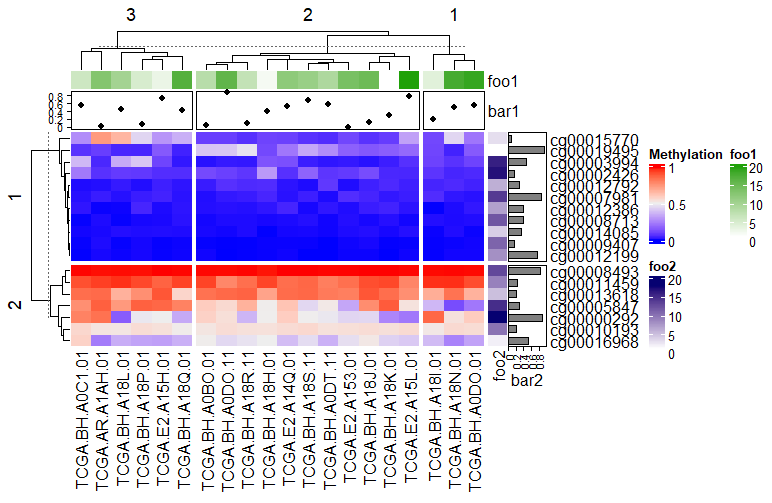
The Complex Heatmap is an advanced data visualization tool primarily used to display matrix relationships in multidimensional data. It adds multi-level annotation, cluster analysis, and data splitting capabilities to the basic heatmap. It can more clearly present the inherent structure and relationships of complex data.
Setup
System Requirements: Cross-platform (Linux/MacOS/Windows)
Programming language: R
Dependent packages:
ComplexHeatmap,dendextend,tidyr,circlize,gridExtra,pheatmap
Data Preparation
The data mainly comes from the methylation data of the TCGA database
# data_mat (continuous)
data <- readr::read_csv("https://bizard-1301043367.cos.ap-guangzhou.myqcloud.com/TCGA.BRCA.sampleMap_HumanMethylation27_ch.csv")
data <- as.data.frame(data)
rownames(data) <- data[,1]
data <- data[,-1]
data_TCGA <- na.omit(data[1:20,1:20])
data_TCGA <- as.matrix(data_TCGA)
# Discrete
discrete_mat = matrix(sample(1:5, 100, replace = TRUE), 10, 10)Visualization
1. Basic ComplexHeatmap
Continuous variables
Here we take the methylation data of the TCGA database as an example
# Continuous variables
Heatmap(data_TCGA , name = "Methylation")
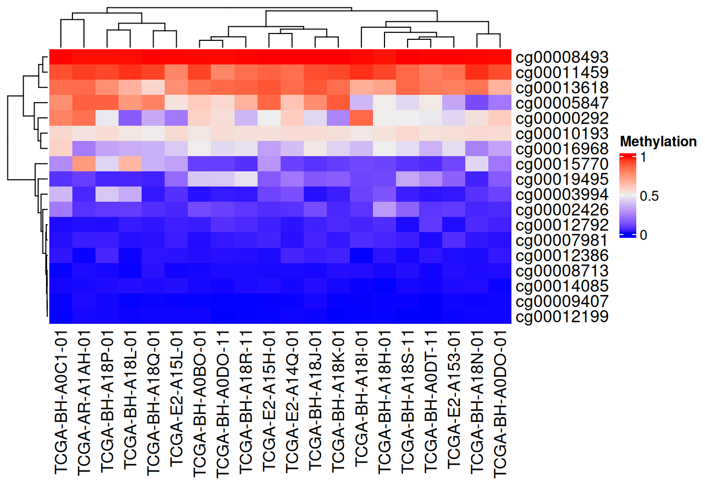
The figure above shows a complex heatmap of methylation levels, with columns representing gene loci and samples representing behavioral patterns. Red indicates high methylation levels, while blue indicates low methylation levels. The edges represent the results of the cluster analysis.
Discrete variables
Here we take generating data as an example
# Discrete variables
Heatmap(discrete_mat, name = "mat")
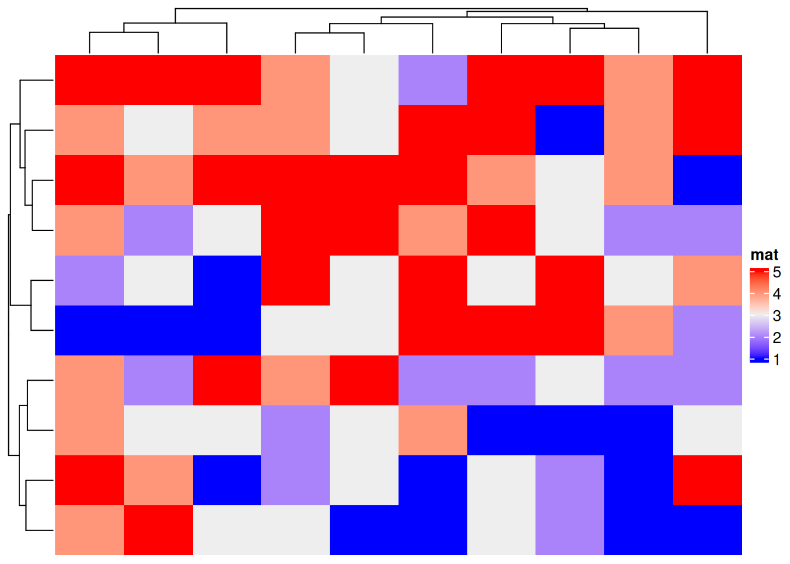
The figure above is a complex heat map of the generated discrete variables, and the side axes are the results of cluster analysis.
2. Customization
2.1 Color customization
Continuous variables
# Customizing the color of continuous variables
col_fun = colorRamp2(c(0, 0.5, 1), # Set the cutoff point
c("blue", "white", "pink"))
Heatmap(data_TCGA, name = "Methylation", col = col_fun,
column_title = "Custom three-segment color")
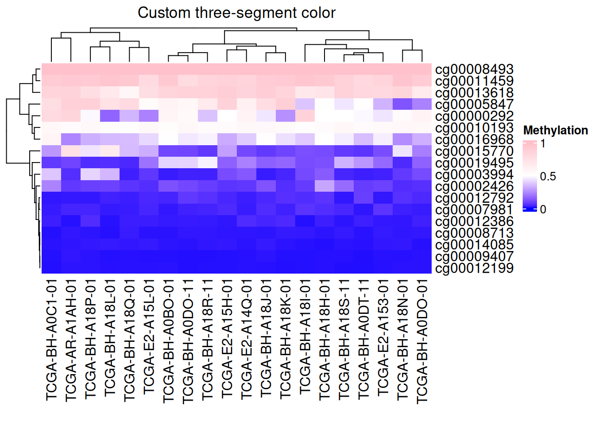
# Customizing the color of continuous variables
Heatmap(data_TCGA, name = "Methylation", col = rev(rainbow(10)),
column_title = "Creating a color vector")
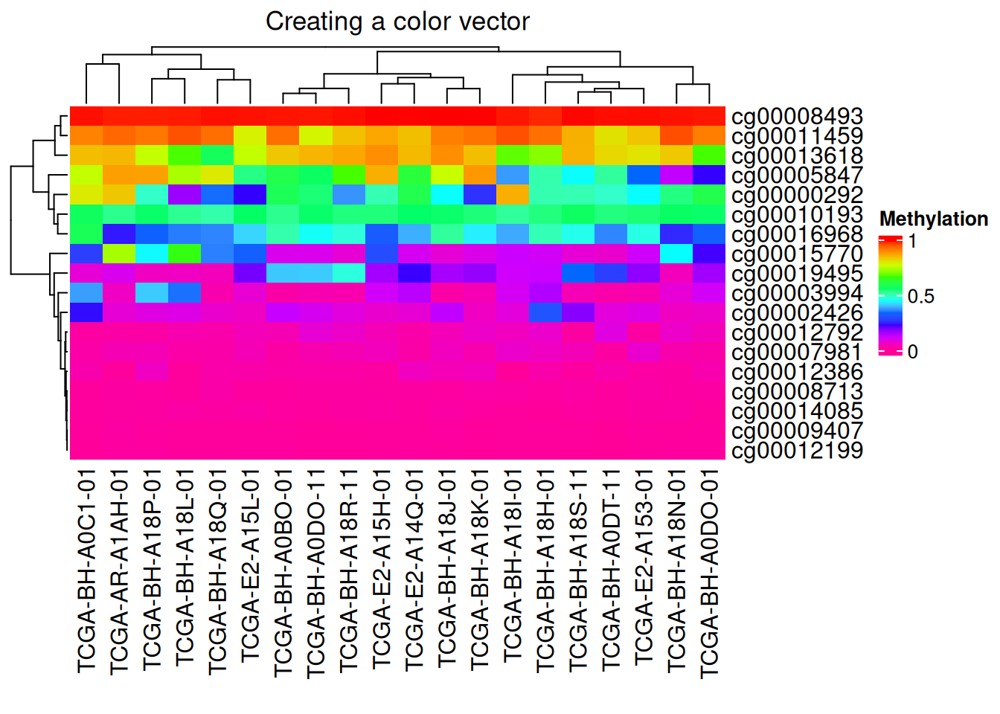
Discrete variables
# Customize discrete variable colors
colors <- c(
"1" = "#BBEDA7",
"2" = "#F3D8FA",
"3" = "#FFECA1",
"4" = "#D9E6F7",
"5" = "#EFBEC6"
)
Heatmap(discrete_mat, name = "mat", col = colors,
column_title = "Customize discrete variable colors")
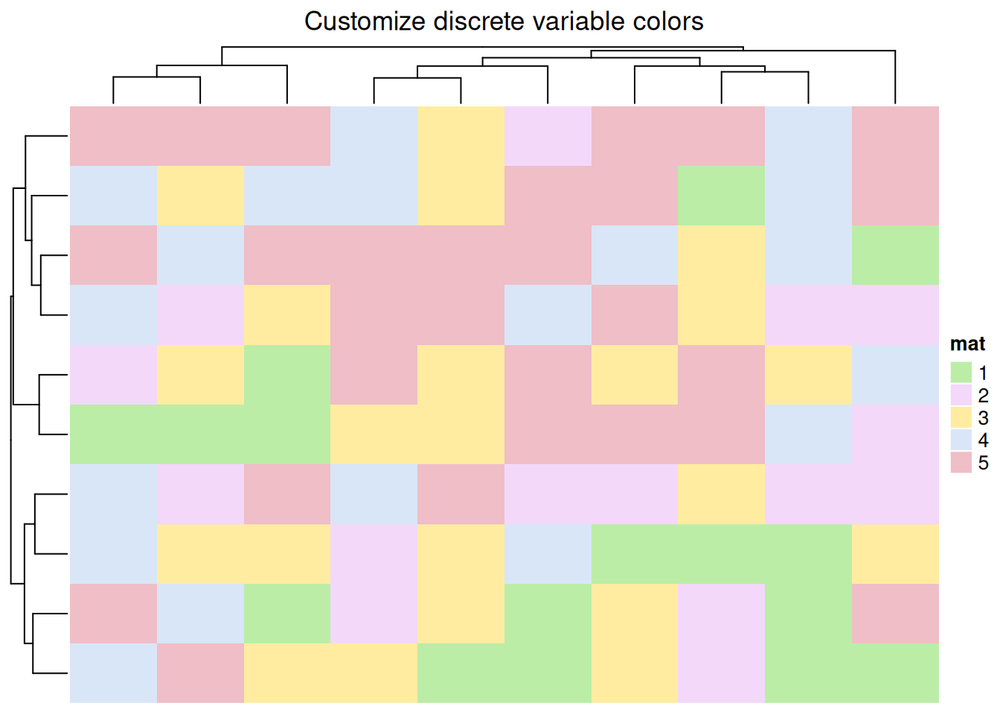
2.2 Border customization
# Border customization
Heatmap(data_TCGA, name = "Methylation",
border = "black", # The border value can be FALSE or color
rect_gp = gpar(col = "white", lwd = 2), # lty line type, lwd line width
column_title = "Border customization")
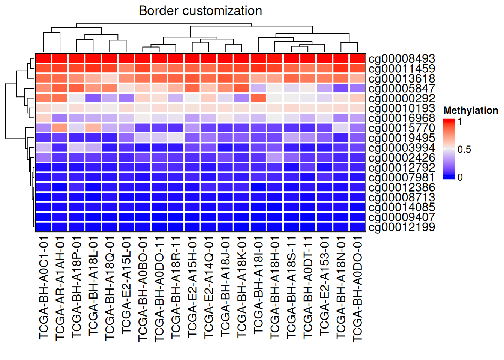
3. Clustering
You can customize clustering methods, dendrogram position, size, etc.
# Clustering
Heatmap(data_TCGA, name = "Methylation",
# row_dend_side = "right",
# column_dend_side = "bottom", # Adjustable tree view position
column_dend_height = unit(1, "cm"),
row_dend_width = unit(1, "cm"), # Adjustable dendrogram distance
column_title = "聚类自定义",
clustering_distance_rows = "pearson", # Clustering method, you can set your own function
# show_parent_dend_line = FALSE # Can hide dotted lines
)
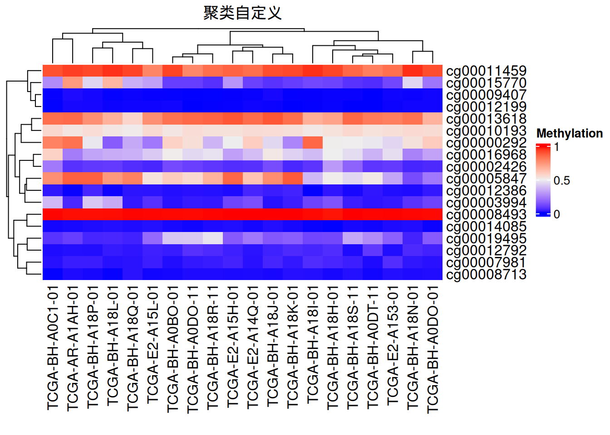
Dendrogram rendering
We also use the dendextend package to color the dendrogram
# Dendrogram rendering
row_dend = as.dendrogram(hclust(dist(data_TCGA)))
row_dend = color_branches(row_dend, k = 2) # Generate branches
# Numbers indicate the number of colors
Heatmap(data_TCGA, name = "Methylation",
cluster_rows = row_dend,
# row_dend_gp = gpar(col = "red") # Customizable colors are also available
)
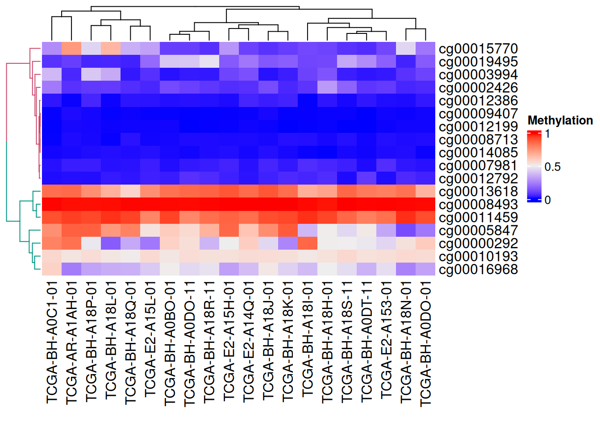
As shown in the figure above, the branches of the tree are different colors.
4. Segmentation
Continuous variables
Use k-means clustering segmentation
# Continuous variable segmentation
Heatmap(data_TCGA,
name = "Methylation",
row_km = 2, # Set the number of divisions
column_km = 3)
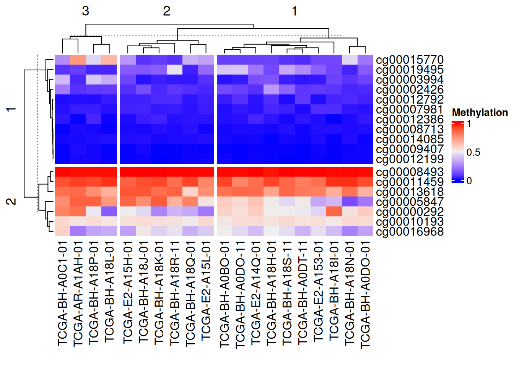
Using vector segmentation
# Using vector segmentation
Heatmap(data_TCGA, name = "Methylation",
row_split = rep(c("A", "B"), 9),
column_split = rep(c("C", "D"), 10))
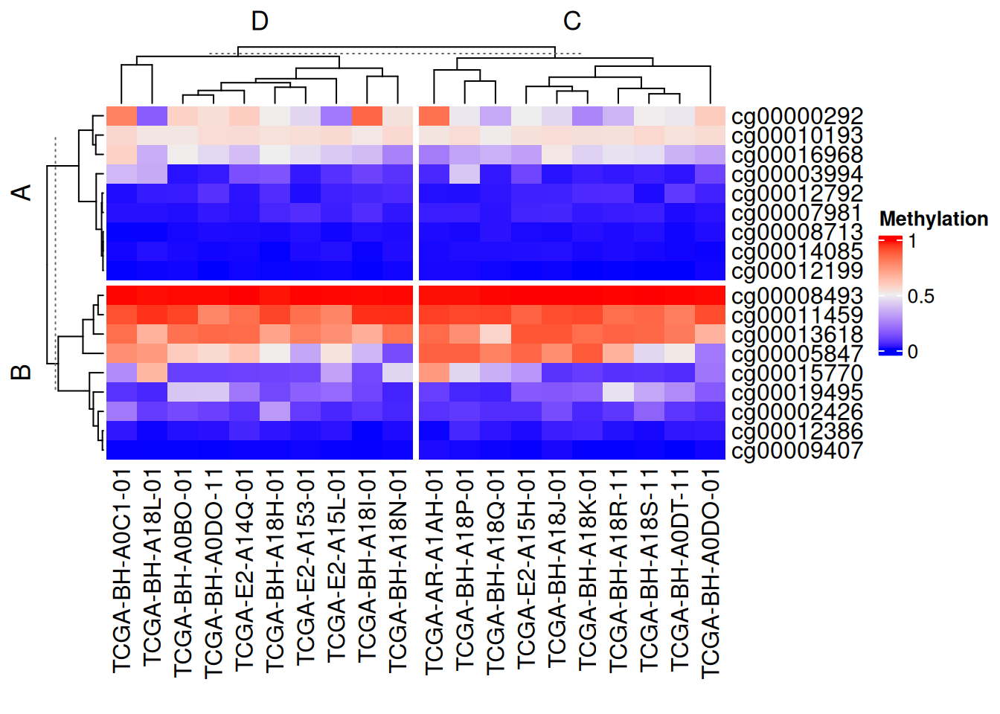
Using matrix segmentation
# Using matrix segmentation
Heatmap(data_TCGA, name = "Methylation",
row_split = data.frame(rep(c("A", "B"), 9),
rep(c("C", "D"), each = 9)))
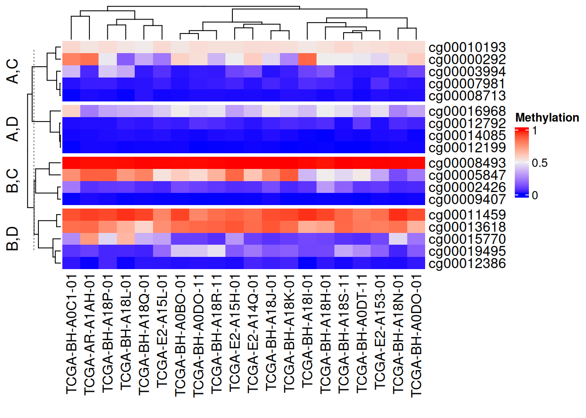
The above segmentation methods can be used independently in rows and columns. Setting show_parent_dend_line = FALSE can hide the dotted line
Discrete variables
segmentation by specified rows and columns
# segmentation by specified rows and columns
Heatmap(discrete_mat,
name = "mat",
col = 1:4,
row_split = discrete_mat[,1]) # segmentation by the first column in the matrix data
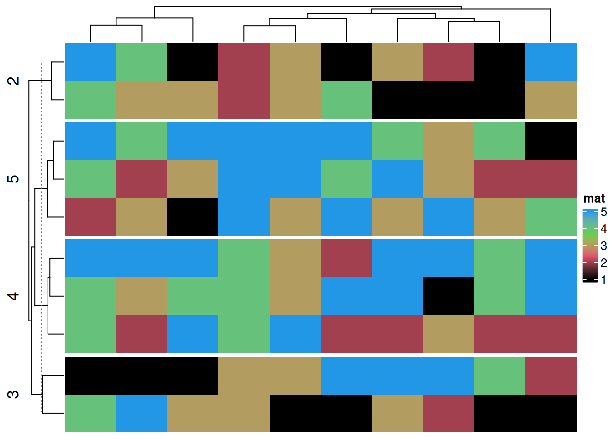
Parameter segmentation
Titles, clustering parameters, etc. can be segmented based on heatmap segmentation
# Parameter segmentation
Heatmap(data_TCGA, name = "Methylation",
row_km = 2,
row_title_gp = gpar(col = c("#9A090A", "#0D4B99"), font = 1:2),
row_names_gp = gpar(col = c("#748901", "#E6AC03"), fontsize = c(10, 12)),
column_km = 3,
column_title_gp = gpar(fill = c("#BFD641", "#FE9900", "#CC6CE7"), font = 1:3),
column_names_gp = gpar(col = c("#1D6103", "#E08804", "#5E0676"), fontsize = c(10, 12, 8)))
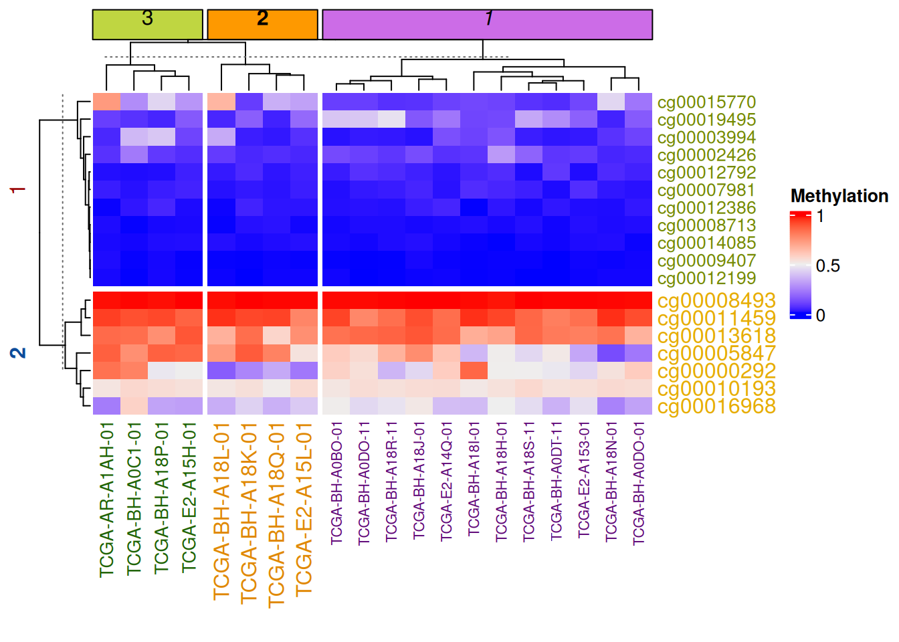
Annotation segmentation
Edge annotations can be segmented based on heatmap segmentation
# Annotation segmentation
Heatmap(data_TCGA, name = "Methylation", row_km = 2, column_km = 3,
top_annotation = HeatmapAnnotation(foo1 = 1:20, bar1 = anno_points(runif(20))),
right_annotation = rowAnnotation(foo2 = 18:1, bar2 = anno_barplot(runif(18)))
)
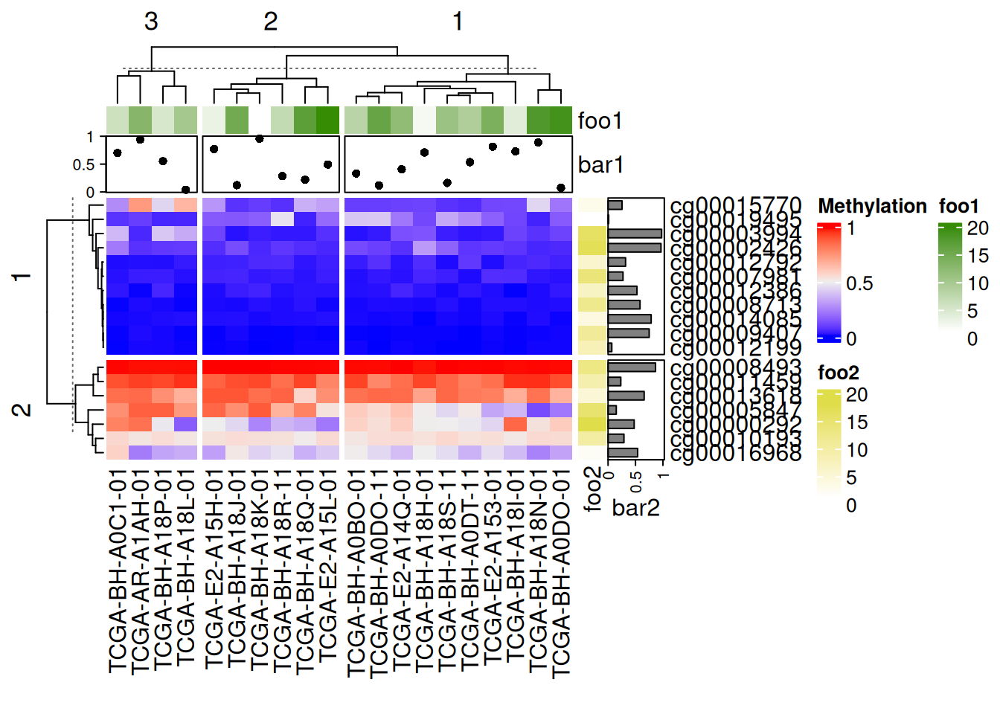
The added point map, heat map, and bar map annotations in the above figure are all segmented with the main heatmap.
5. Add labels
Add data
cell_fun accepts a function that is applied to each cell in the heatmap. The function’s arguments are as follows:
j: Column index (column number).i: Row index (row number).x,y: Coordinates of the cell center (in the coordinate system of the plotting device).width,height: The width and height of the cell.fill: The value corresponding to the cell (i.e., the value in the matrix).
# Add data
small_mat = data_TCGA[1:9, 1:9]
col_fun = colorRamp2(c(0, 0.5, 1), c("#EBA7FE", "white", "pink"))
Heatmap(small_mat, name = "Methylation", col = col_fun,
cell_fun = function(j, i, x, y, width, height, fill) {
grid.text(sprintf("%.1f", small_mat[i, j]), x, y, gp = gpar(fontsize = 10))
})
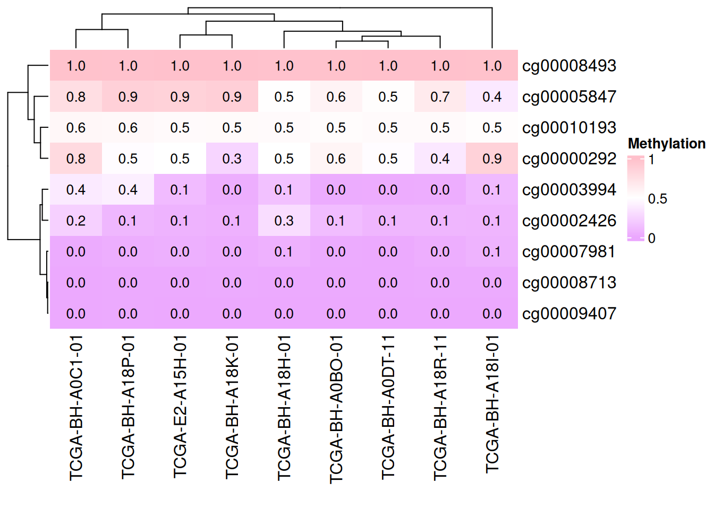
# Add data
small_mat = data_TCGA[1:9, 1:9]
Heatmap(small_mat, name = "Methylation", col = col_fun,
cell_fun = function(j, i, x, y, width, height, fill) {
if(small_mat[i, j] > 0.5) # Set the display range
grid.text(sprintf("%.1f", small_mat[i, j]), x, y, gp = gpar(fontsize = 10)) # Add text/value
})
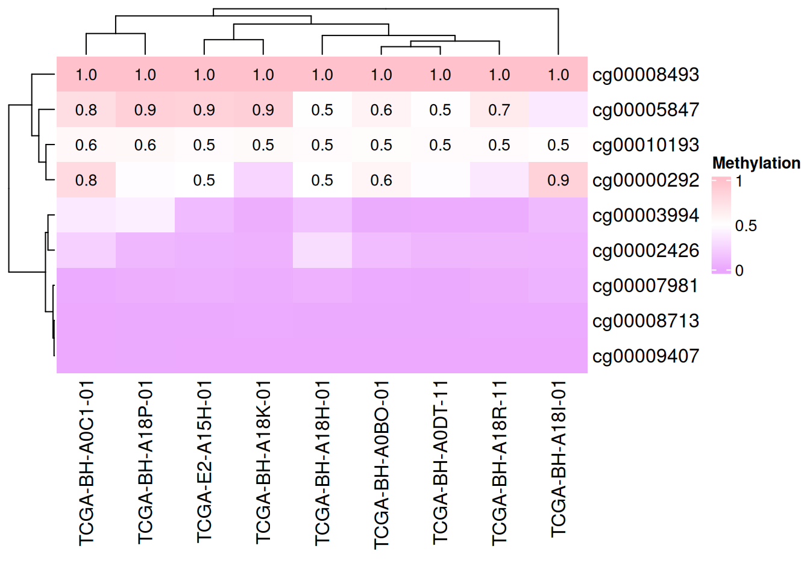
The above figure only shows data with methylation levels greater than 0.5
Add graphics
# Add graphics
small_mat = data_TCGA[1:9, 1:9]
Heatmap(small_mat, name = "Methylation", col = col_fun,
row_km = 2, column_km = 2,
layer_fun = function(j, i, x, y, w, h, fill) {
ind_mat = restore_matrix(j, i, x, y)
ind = unique(c(ind_mat[1, 4], ind_mat[3, 2])) # Positioning, add graphics to each segmentation location
grid.points(x[ind], y[ind], pch = 16, size = unit(4, "mm")) # Add Point
}
)
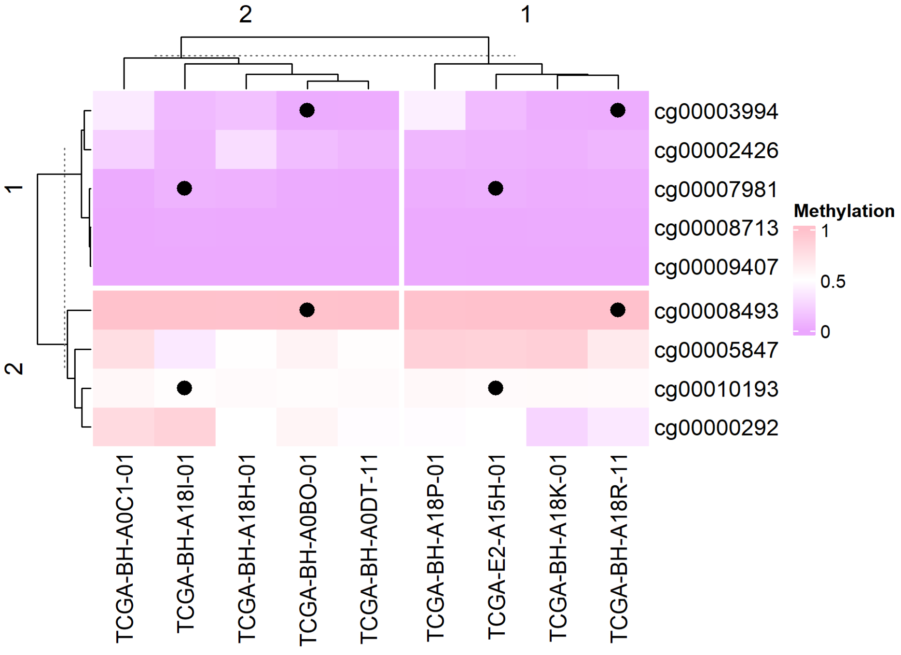
Application
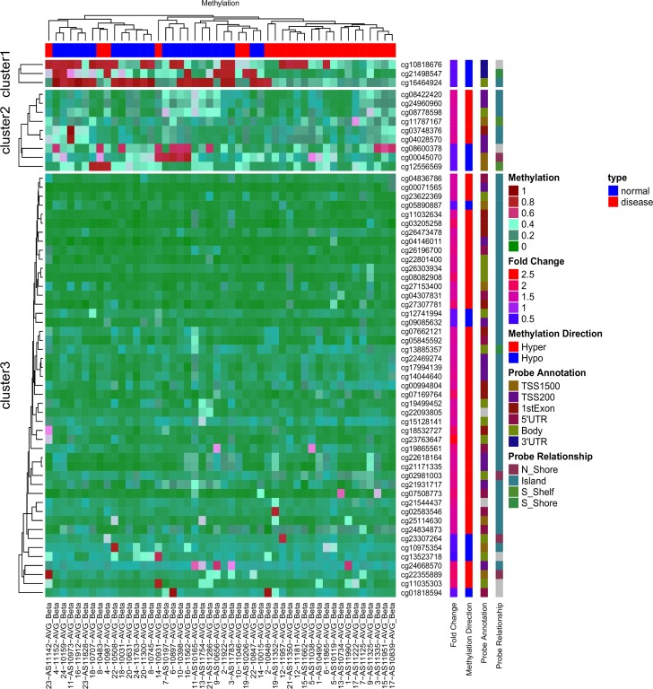
The figure above is an unsupervised hierarchical clustering heatmap of 59 differentially methylated ATG sites in the AVR data [1]. Red indicates high DNA methylation, and green indicates low DNA methylation.
Reference
[1] Radhakrishna U, Albayrak S, Alpay-Savasan Z, Zeb A, Turkoglu O, Sobolewski P, Bahado-Singh RO. Genome-Wide DNA Methylation Analysis and Epigenetic Variations Associated with Congenital Aortic Valve Stenosis (AVS). PLoS One. 2016 May 6;11(5):e0154010. doi: 10.1371/journal.pone.0154010. PMID: 27152866; PMCID: PMC4859473.
[2] Gu, Z. (2016) Complex heatmaps reveal patterns and correlations in multidimensional genomic data. Bioinformatics.Gu, Z. (2022) Complex Heatmap Visualization. iMeta.
[3] Tal Galili (2015). dendextend: an R package for visualizing, adjusting, and comparing trees of hierarchical clustering. Bioinformatics. DOI:10.1093/bioinformatics/btv428
[4] Wickham H, Vaughan D, Girlich M (2024). tidyr: Tidy Messy Data. R package version 1.3.1, CRAN: Package tidyr.
[5] Gu, Z. (2014) circlize implements and enhances circular visualization in R. Bioinformatics.
[6] Auguie B (2017). gridExtra: Miscellaneous Functions for “Grid” Graphics. R package version 2.3, CRAN: Package gridExtra.
[7] Kolde R (2019). pheatmap: Pretty Heatmaps. R package version 1.0.12, CRAN: Package pheatmap.